Префектура Оита · Беппу · рёкан
KAI Beppu: рёкан Кэнго Кумы, где тодзи укладывается в одну ночь
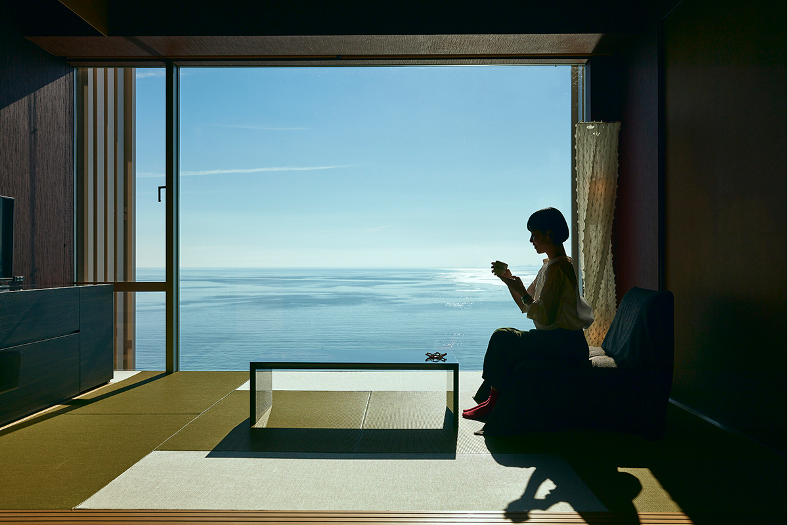
Тодзи, лечение горячими источниками, когда-то требовало недель. В рёкане KAI Beppu, который спроектировал Кэнго Кума, его сжали до одной ночи, а сам рёкан превратили в маленький онсэн-городок. Проверить, как это работает, сюда приехала дизайнер мидзухики, декоративных японских шнуров.
Тодзи
Лечение водами для занятых людей
Если искать, откуда в Японии пошёл оздоровительный туризм, придётся вспомнить тодзи, лечение водами на горячих источниках. Обычно на тодзи приезжали надолго и жили у источника неделями. Сегодня в моде «пути-тодзи», маленькое тодзи: короткая поездка, после которой тело и голова приходят в порядок.
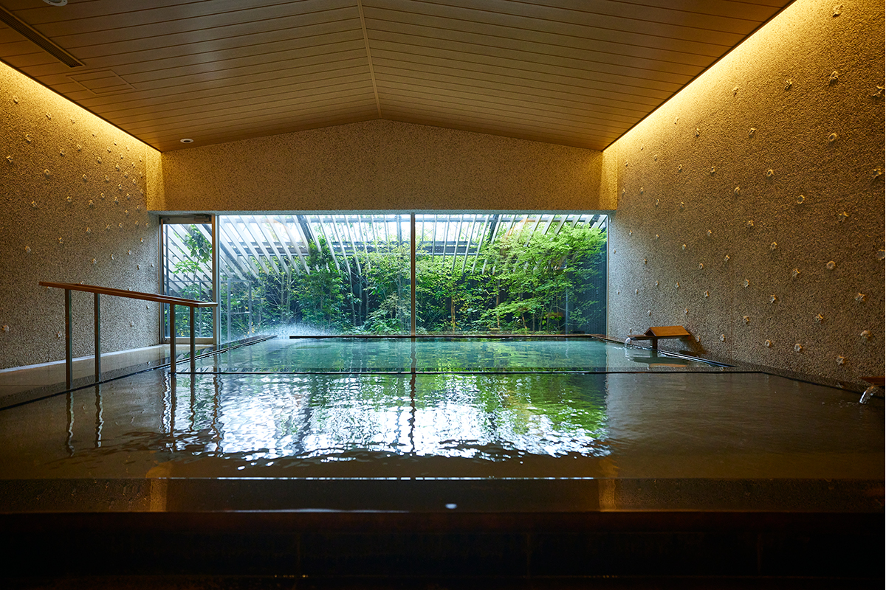
KAI это сеть рёканов при онсэнах компании Hoshino Resorts. Здесь придумали «Урухаси гэндай тодзи», современное тодзи, рассчитанное всего на одну ночь с двумя днями. Сотрудники, ставшие «хранителями источников KAI», ведут занятие «Онсэн ироха» о составе воды и правильном купании и показывают «гимнастику современного тодзи», которая разгоняет кровь. В рёкане есть зона отдыха после купания с напитками, которые подбирают сами хранители источников, и «галерея онсэна», где можно разобраться в основах купания.
Из всех рёканов сети гостья выбрала KAI Beppu, построенный по проекту архитектора Кэнго Кумы.
Архитектура
Онсэн-городок под одной крышей
Концепция рёкана звучит как «драматичный онсэн-городок»: многое в интерьере повторяет улицы Беппу, и здесь интересно бродить, разглядывая архитектуру. На этаже лобби проложен мощёный переулок. Вдоль него, как лавки вечернего базара, тянутся библиотека для путешественников с напитками, магазин и «Лаборатория». «Площадь онсэна» украшена фонарями из бумаги под васи, и при ней устроена ванна для ног под открытым небом, где гуляет морской ветер.
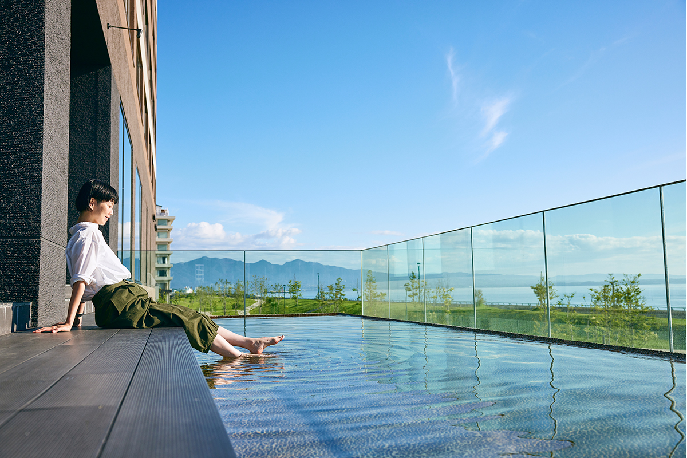
Номера «Какисибу-но ма» оформлены в духе края. Обои цвета какисибу, рыжевато-красного танина из хурмы, навеяны «адом» Ти-но икэ дзигоку, кроваво-красным прудом, одной из главных достопримечательностей Беппу. Ткани сделаны в технике бунго-сибори, традиционного узелкового крашения Оиты.
«Здесь повсюду встречаешь что-то из местной культуры, и это очень приятно. Из большого окна номера виден весь залив Беппу. Смотришь, как море и небо меняют цвет вместе со временем суток, и голова будто перезагружается»
гостья, дизайнер мидзухики
Как и вид за окном, сам рёкан утром, днём и ночью выглядит по-разному. Гулять по нему стоит так же неспешно, как по улицам онсэн-городка.
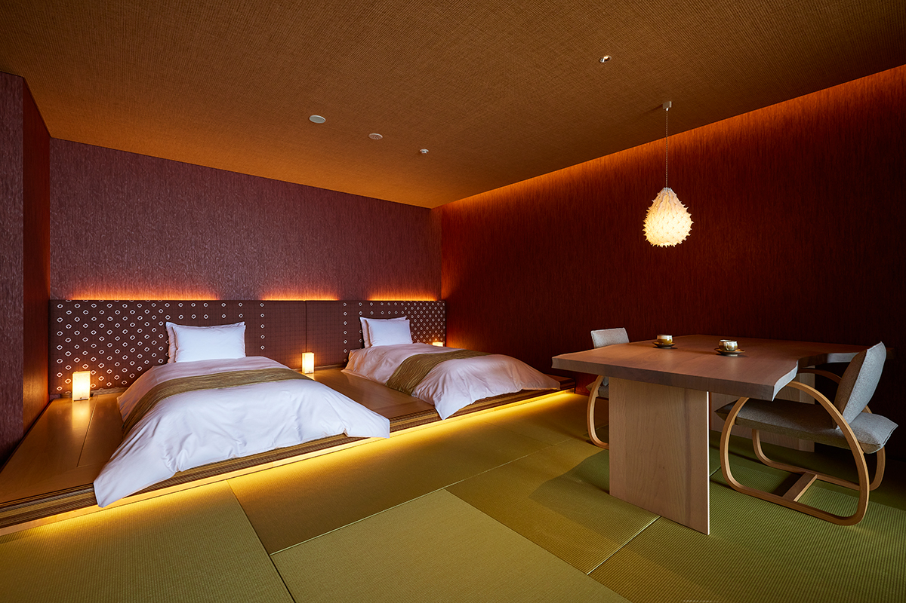
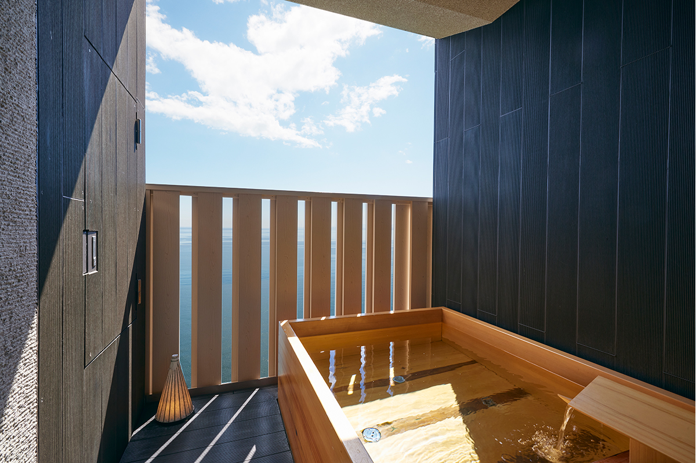
Онсэн
Тёплая вода и горячая вода
Онсэн Беппу один из крупнейших в Японии: воды здесь много, и составы у источников самые разные. У KAI Beppu два собственных источника, и оба хлоридные. Вода мягкая, прогревает до глубины и делает кожу гладкой. Крытая часть большой купальни разделена на «нуру-ю» около 38 °C и «ацу-ю» около 42 °C, и для каждой есть свой способ купаться.
«На занятии „Онсэн ироха“ после заселения я узнала, что тёплая вода успокаивает нервную систему и помогает лучше спать, а горячая, наоборот, бодрит и будит тело. Узнавать об онсэне больше тоже часть тодзи в KAI»
гостья, дизайнер мидзухики
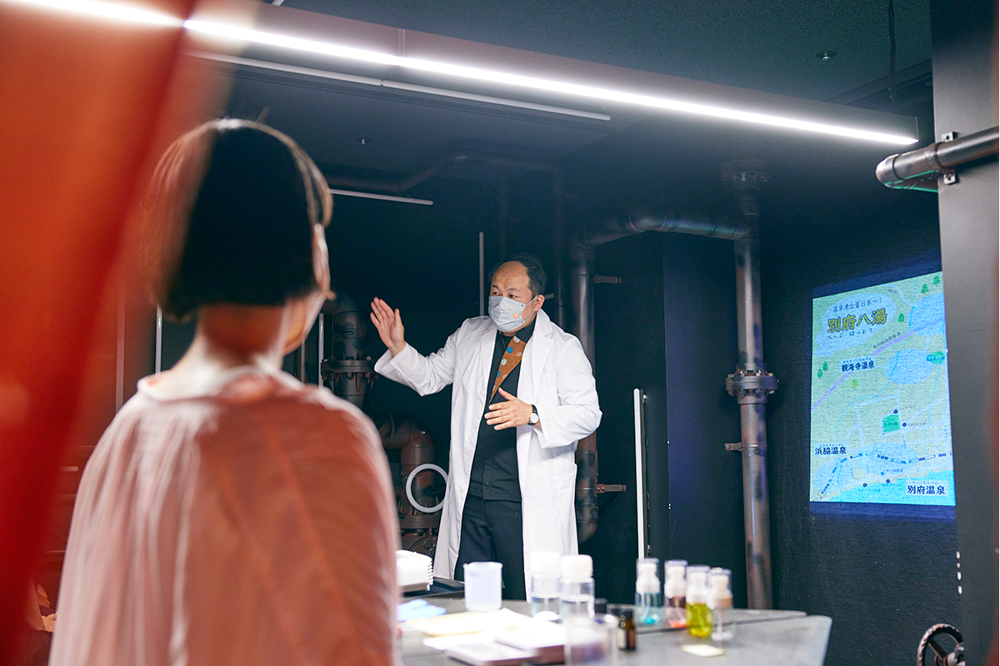
По дороге к большой купальне переулок проходит через сад, где устроена зона отдыха после купания. Здесь бесплатно наливают чай с юдзу и обжаренный чай ходзитя с юдзу и раздают фруктовый лёд.
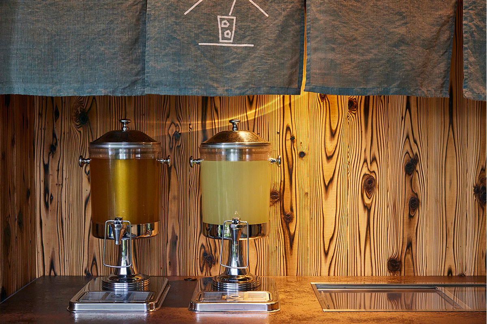
Каждое утро проходит «гимнастика современного тодзи», тоже по записи. В неё включены движения, придуманные по мотивам пляжей Беппу, и после неё тело окончательно просыпается. Делать её советуют после купания.
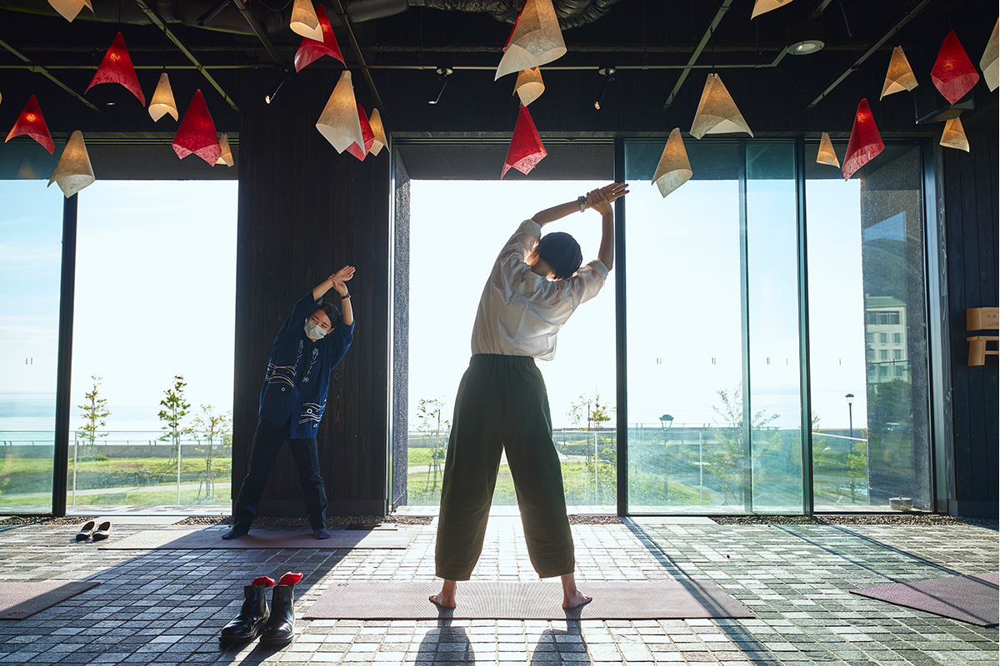
Вечер
Ярмарка на «Площади онсэна»
Когда стемнело, на площади зажглись фонари и появились лавки: «Бар прогулки по адам» и катануки, детская забава, где из сахарной пластинки выковыривают фигурку. Звучала «Беппу ондо», местная песня для танцев, и вокруг шумела ярмарка, как на празднике в онсэн-городке.
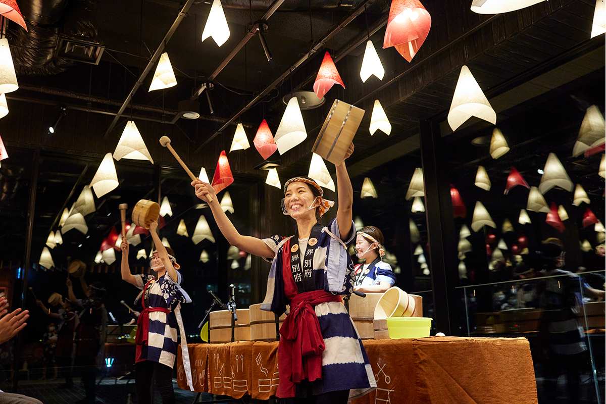
По дороге на ужин гостья задержалась у лавок поиграть в смарт-бол, японский настольный бильярд с шариками, и в кольцеброс.
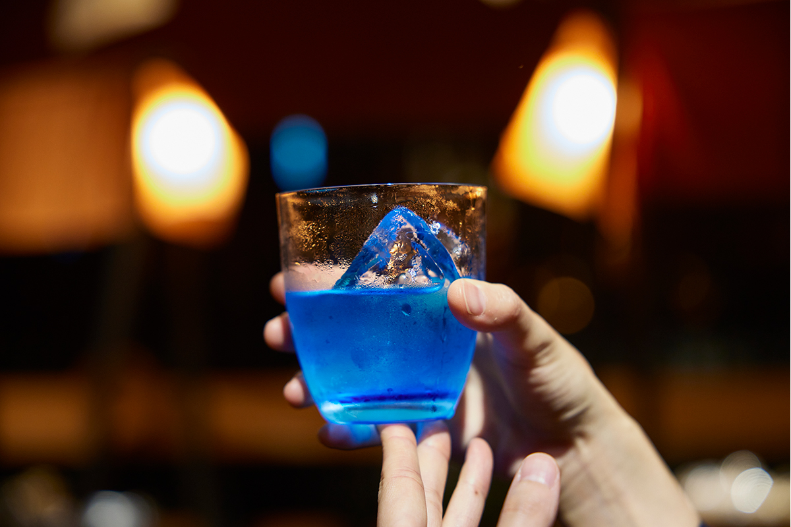
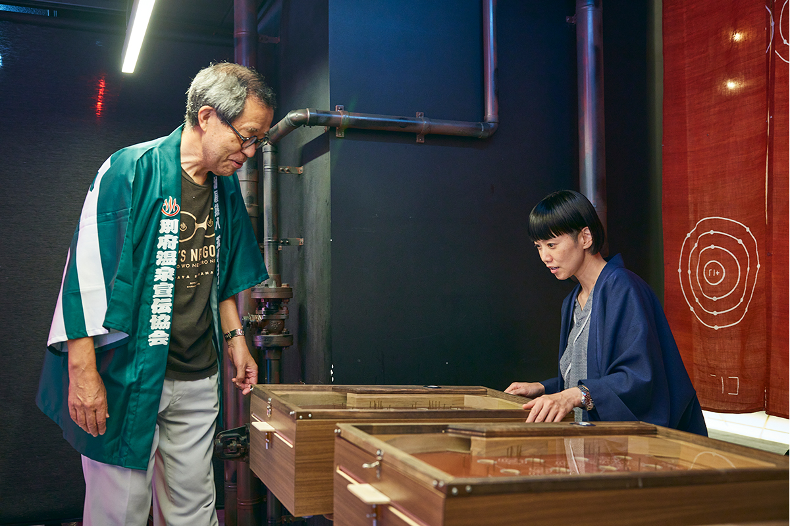
Между лавками стоит и тэ-ю: в него опускают ладони, а не ноги.
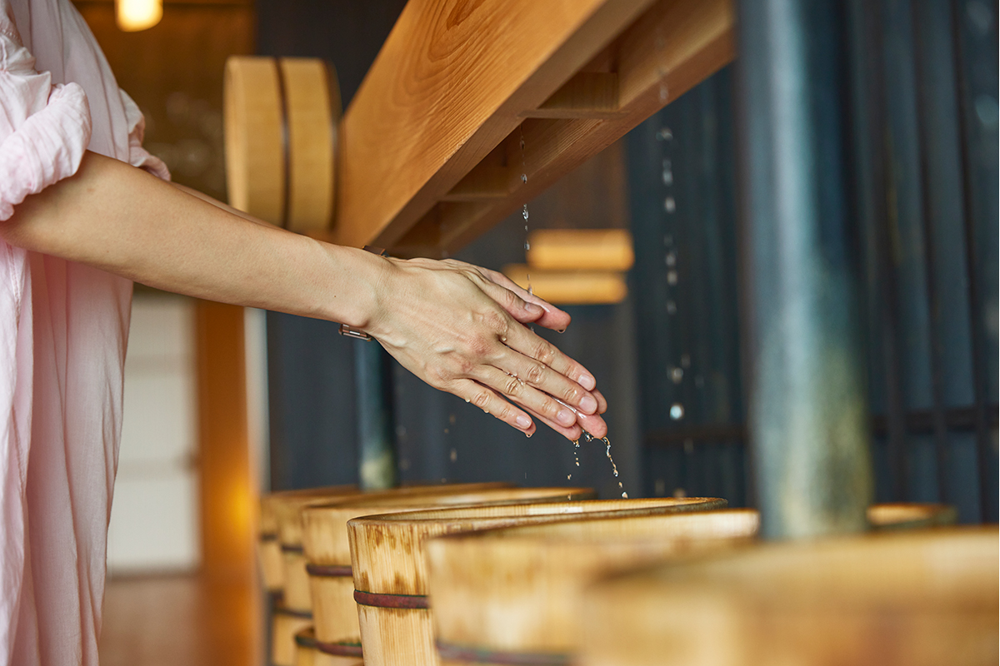
Кухня
Лангуст, фугу и кабосу
Ужин подают в стиле кайсэки из сезонных даров моря и гор Оиты. Гостья выбрала «Бунго набэ кайсэки», где главное блюдо это горшок с лангустом исэ-эби, фугу, групером куэ и другими дорогими продуктами. После сытного ужина спалось легко.
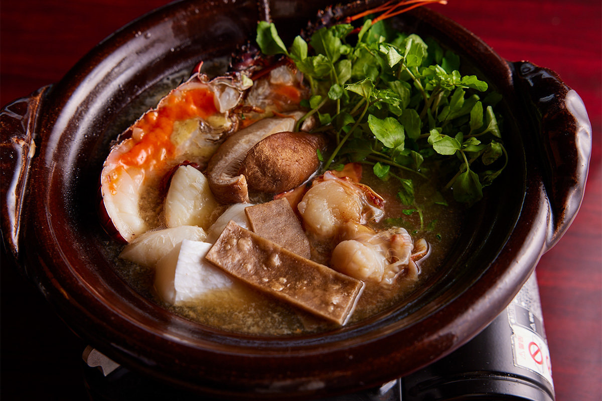
На завтрак здесь подают «гототи-тёсёку», завтрак из местных продуктов по местным рецептам. В KAI Beppu это блюда по мотивам дзигоку-муси, знаменитого способа Беппу готовить на пару из горячих источников.
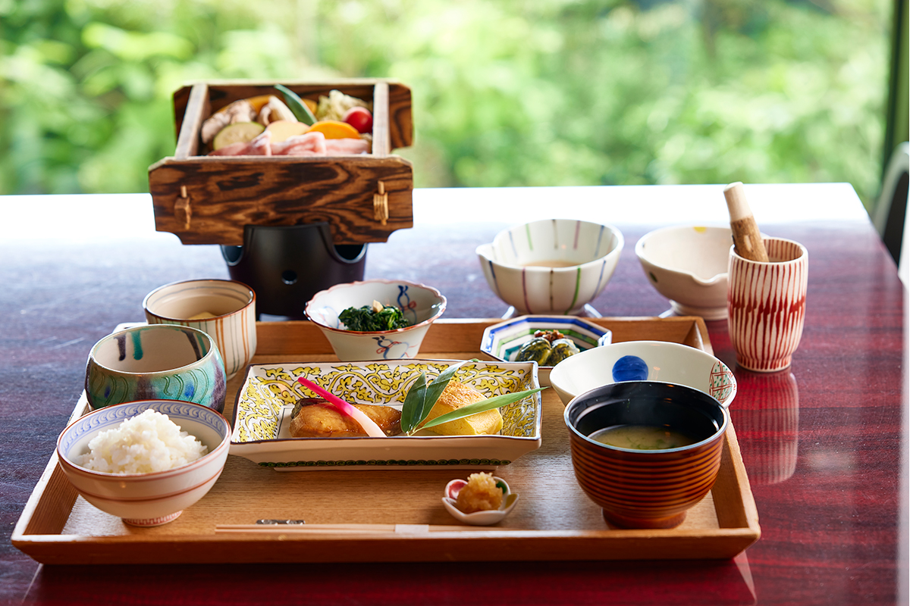
Ремесло
Самшитовая щётка на всю жизнь
На второй день гостья сделала гимнастику современного тодзи и попробовала самшитовое ремесло Беппу. Вместе с мастером, который режет изделия из самшита, гости смотрят, как рождается щётка, и делают свою.
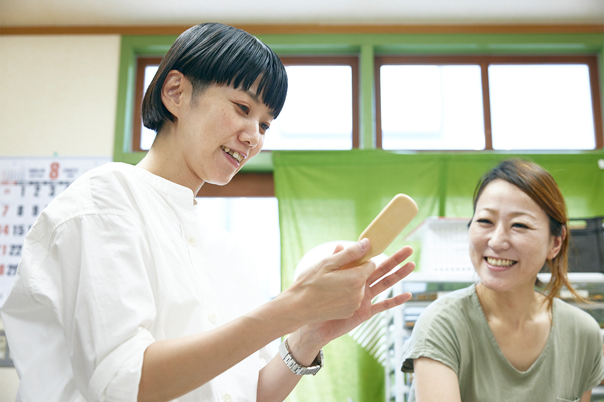
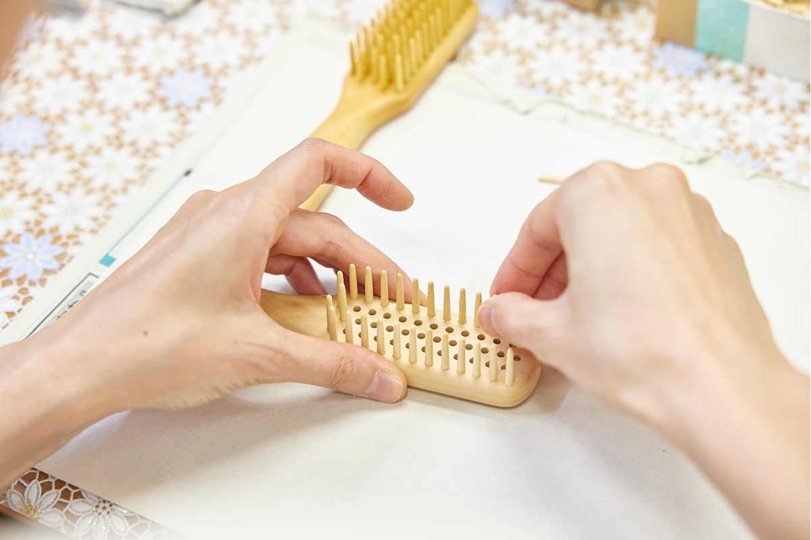
«Еда, пространство, занятия: через всё это узнаёшь историю края, и это было очень интересно. Когда знаешь, что стоит за вещами, видишь вокруг совсем другое. Получилось путешествие, которое чувствуешь всеми пятью чувствами»
гостья, дизайнер мидзухики
В 2022 году ночь с ужином и завтраком в KAI Beppu стоила от 31 000 иен с налогом и сервисным сбором.
KAI Beppu
- Адрес
- префектура Оита, Беппу, Китахама, 2-14-29
- Телефон
- +81 570-073-011 (9:30–18:00)
- Номера
- 70
- Заезд / выезд
- 15:00 / 12:00
- Цены / Вход
- от 31 000 иен с налогом и сервисным сбором за ночь с ужином и завтраком
- Как добраться
- около 50 минут на машине от аэропорта Оита; около 10 минут пешком от станции JR Беппу
Фото: Симпэй Фукадзава.